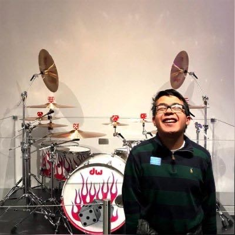
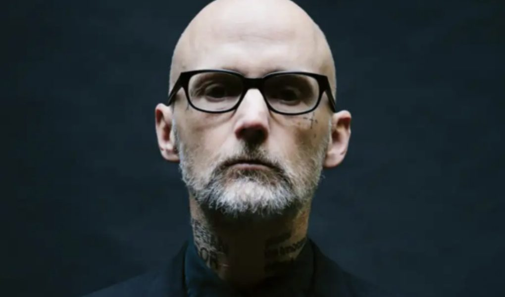
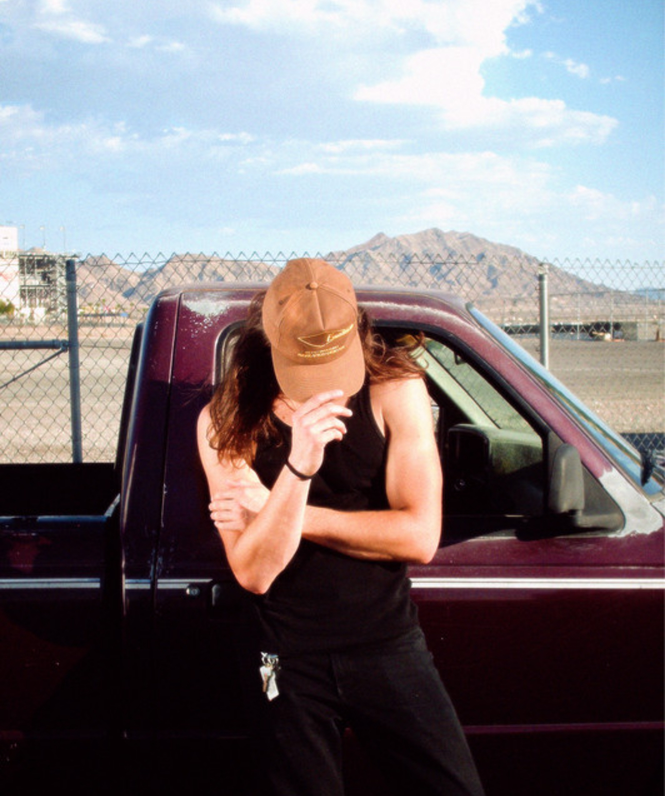

TheDrabCollective is a Latin-Funk-Electronic-Rock group from outerspace and also the ocean. Watching them is the most fun you'll ever have watching a live music performance, even though they're objectively the most boring band around. Most of their instruments are invisible, and many have debated whether they're actually playing their instruments or if it's just a recording from a mysterious interstellar source. Or the ocean. The world is not ready
Pepe Sahab is a drummer and percussion player who plays a big variety of rhythms ranging from rock to latin music and all its fusion sub genres He has also worked as producer for some student projects and he is currently working on his final project.
Arnold Sallan is a drummer/music producer based in Boston, MA. Prior to Berklee, Arnold’s time was spent producing electronic music under the project “Mobee”. Upon returning to Berklee, Arnold was fortunate to discover and be recruited by the coding master Professor Rome to join the crazy funk, rock, latin electronic music group, *TheDrabCollective*.
Althea “gleep glorp” Wincek plays an interstellar synthesizer they only manufacture in a secret society that lives in the center of the sun. They were recruited for theDrabCollective because they didn't have anything else going on. Their instrument doesn’t even have a keyboard or anything, it’s like invisible or something. Or so they say.
JAMES EAST is a producer and saxophone player from Las Vegas, NV. He grew up playing jazz and listening to a variety of genres, from underground rap to dubstep. He developed a love for production and sound design in 2022. He uses a variety of software synthesizers, as well as saxophone, guitar, and bass to make unique sounds. In TheDrabCollective, he produces and does sound design, and for live performances, he plays saxophone.
